A few weeks ago a good friend of mine (Matan) asked me if I would like to join him to a bicycle trip in Japan. I didn't really cycle properly since my big trip so naturally, I said yes.
I have to first say huge thanks to Matan, he pretty much organized the entire trip and I just tagged along. It was a complete blast and I'm really not taking it for granted that he literally planned everything for us.
So we first flew to Osaka together on Saturday night, we took a night flight because we planned sleeping on the plane and arriving fresh to Osaka. Little did we know is that Peach airlines have the absolute worst seats I've ever experienced in my life. But nonetheless we arrived to Osaka on Saturday morning.
We got to dotonbori and put our bags in a locker and just wandered around until we took the shinkansen to Fukuyama to get to Onomichi, which is the start of the bicycle route. While walking around Osaka, Matan told me about the fact that if you shoot a random Osaka person with a finger gun, they will play along. I didn't belive him at first, but then he did it to a random sales man, and, to my surprise, he played along. I am still shocked to this moment.
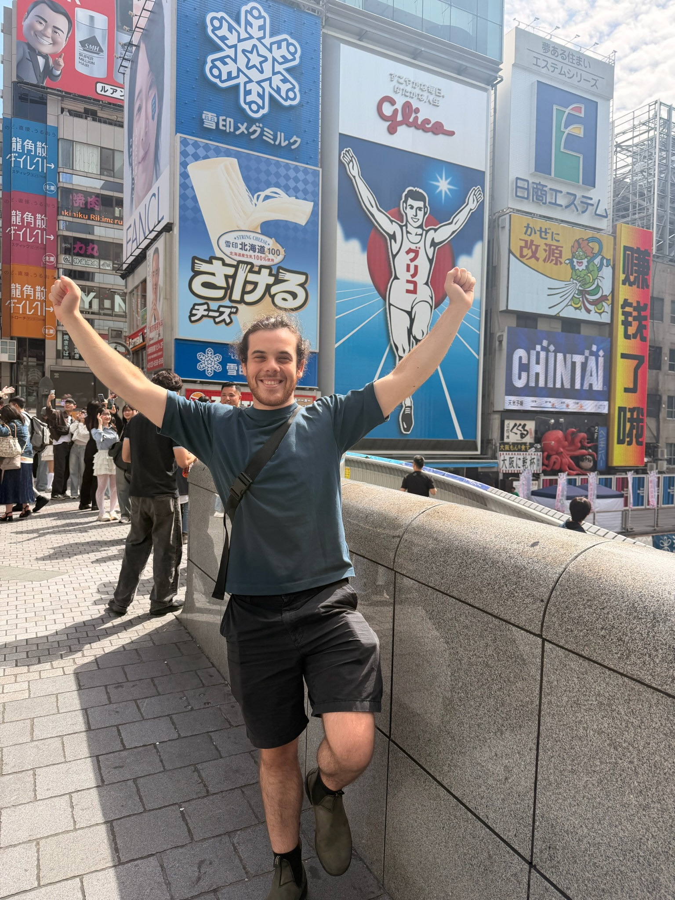
We woke up in onomichi and went first thing in the morning to the cycle shop, there we rented the bikes. I also rented a bag that could be attached to the bike, but apparently the bag was given out because of a confusion of orders or something. So they ended up giving me a smaller bag that attaches to the middle of the bike for free! To keep! So nice solution.
We took the bike, and took a 5 minute ferry to Mukaishima island and from there we started the bicycle trip. It was super fun, and the views were stunning.
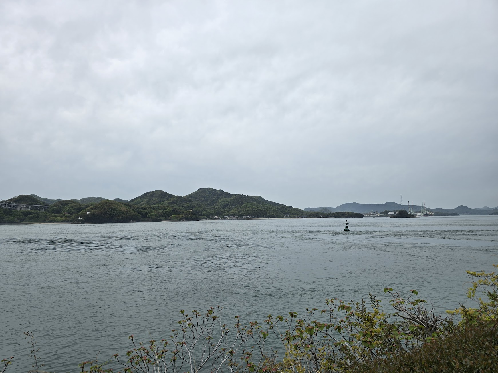
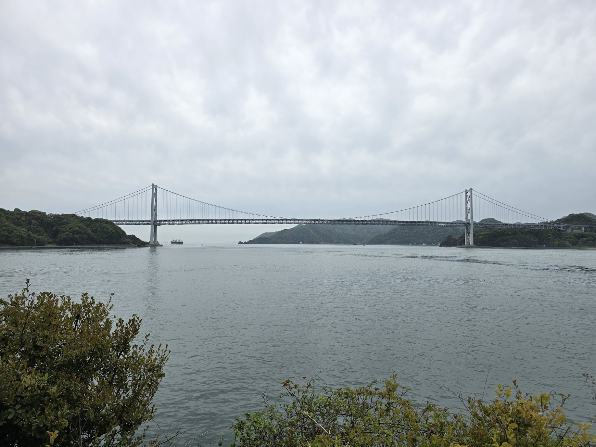
We cycled our way to Ikuchi Island quite fast, so we took our time until we reached Omishima, where we would spend the night in a BNB we rented. On the way to Omishima we stopped at a few shrines and even an onsen!
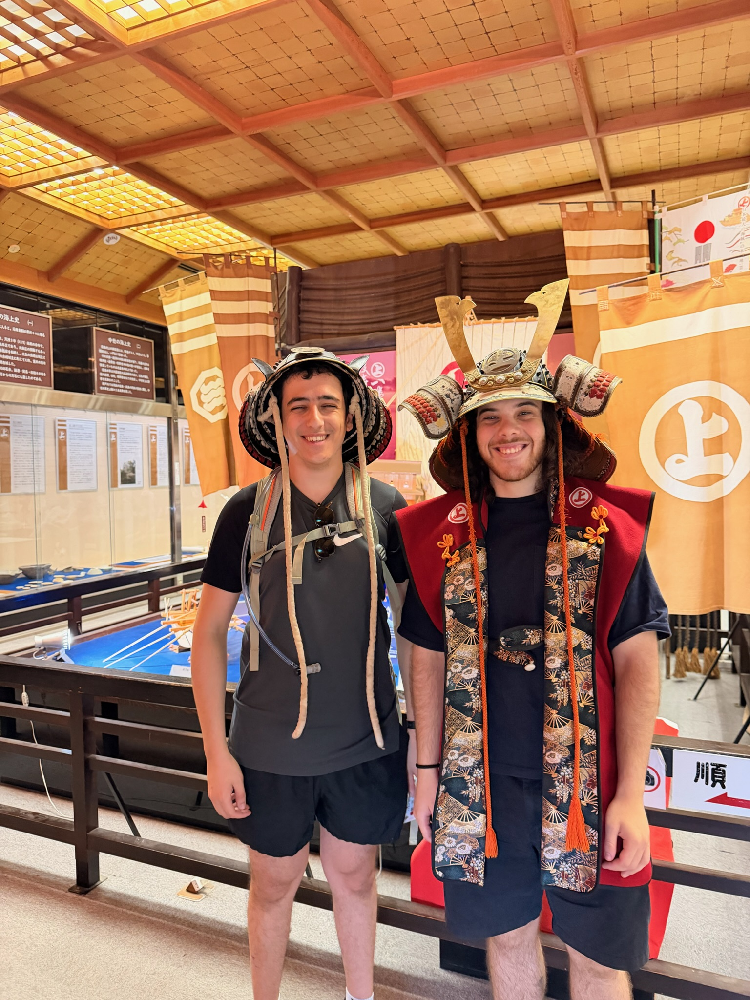
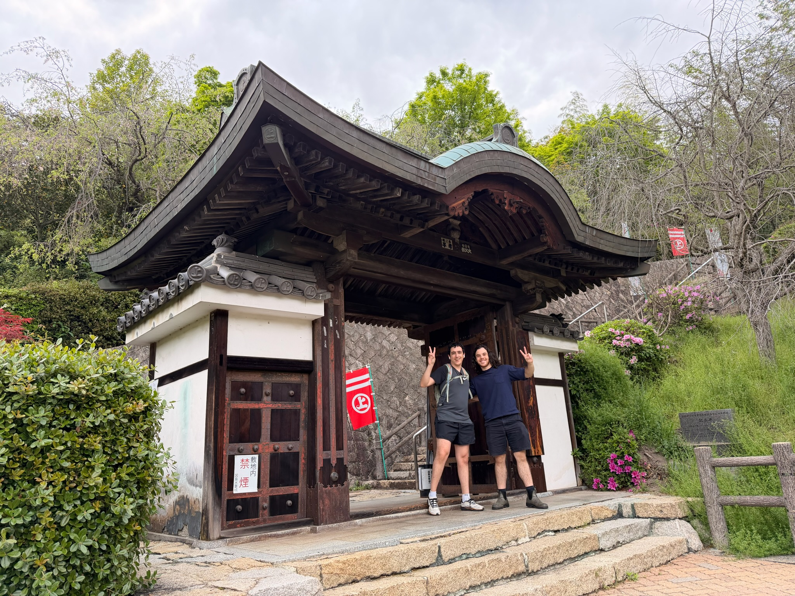
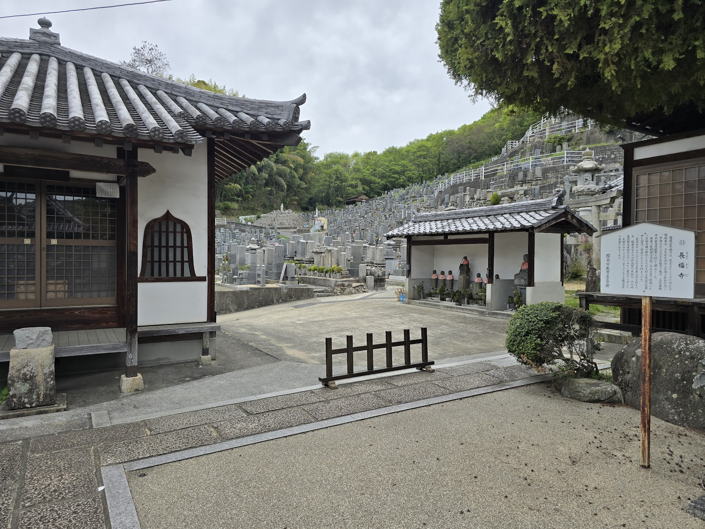
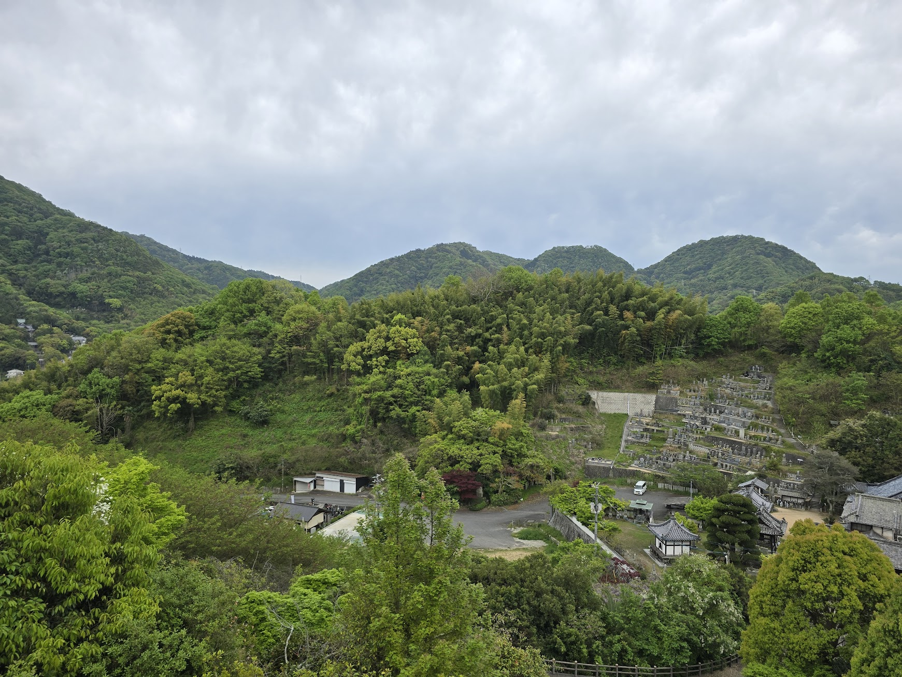
On the second day we decided to loop around Omishima, it's around 40 km so we knew we could do it in around 4 hours. After we had our breakfast we went to Waka, which is a hotel on Omishima that for some reason has every single service that you need. From fishing to going hiking to sending your bikes with a bike taxi back to Onomichi. We wanted to fish, so we booked a fishing trip from them. But there was a conundrum! At around 11 AM We booked the fishing for 14:30 and we quickly went to a rabbit island. Which is where we realized that:
A. We don't really care for bunnies that much
B. If we get back from the fishing at 16:00 (as it's 90 min) we will have to cycle around the island until 20:00.
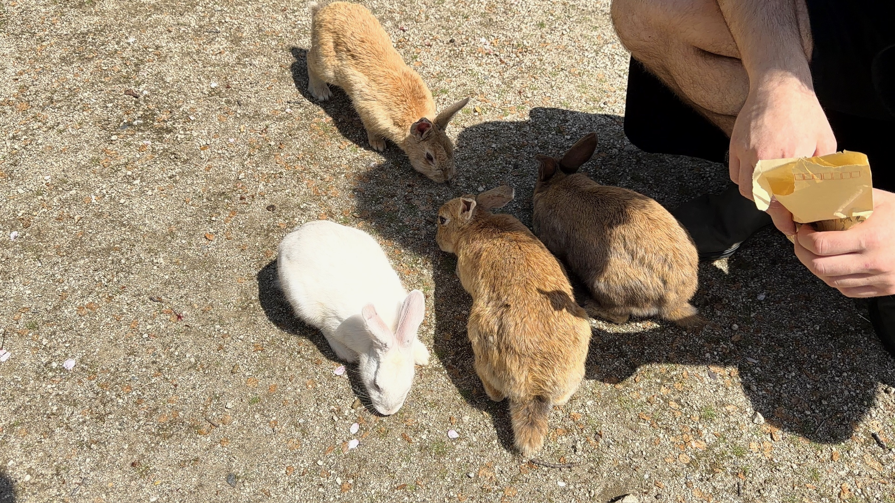
So we started asking the reception if we can change the timing. And they were absolutely not responsive. We tried WhatsApp calling, regular phone calling from a strangers phone. Nada! We decided to cycle and after around half an hour (around 13:00)! They said we can push it back. Absolutely wild.
Anyway, we cycled Omishima, it was gorgeous as well. But it had so many up hill rides. At one point I had to give up and walk my bike. Matan stood stronger than me. Also, I am dumb, and I didn't wear sun screen. I was radiating red after we finished.
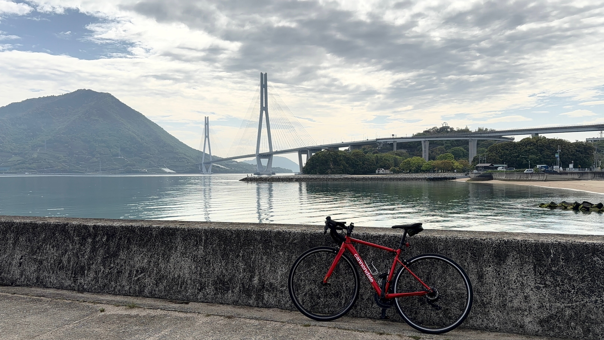
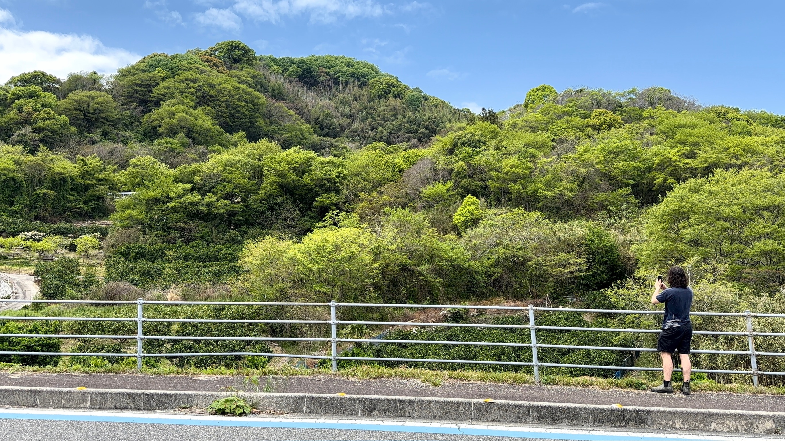
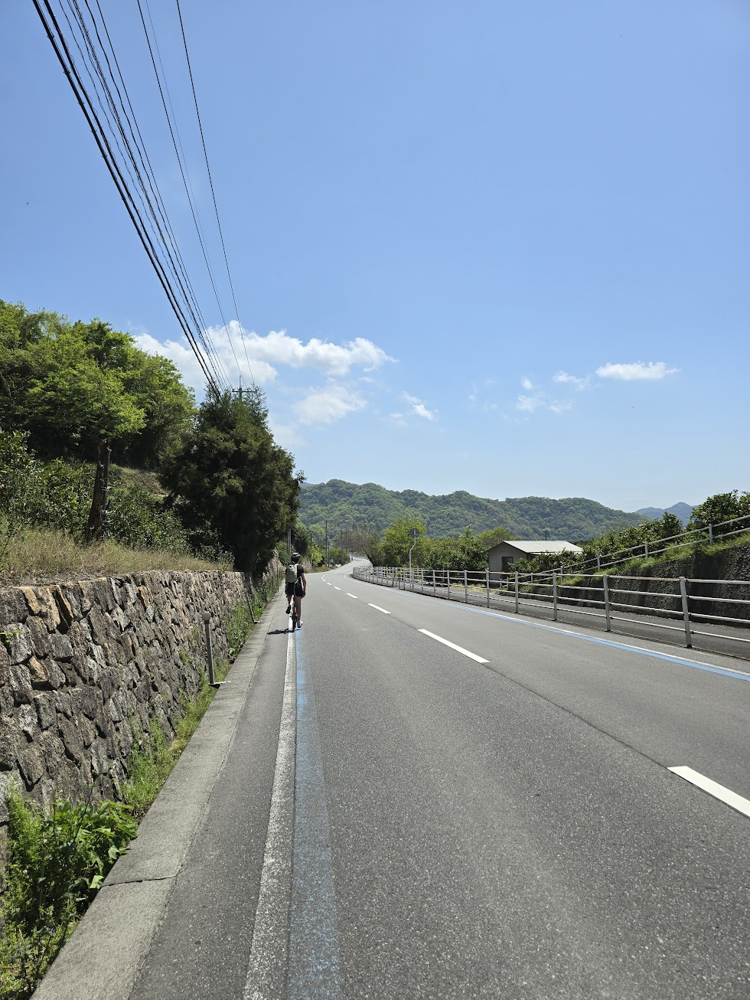
According to Matan, I was arguing with the universe the entire trip, for me, the worst was at the second day. I was just not having it with the universe. Stuff didn't work, I tried parking my bike and it fell and hit me. I was cycling and sometimes would lose balance. Me and the universe were having an absolute fit, and the universe was winning. I think we made up a little by then. But still, we have some work to do.
After finishing the island loop, we went fishing. It was surprisingly fun, even though I don't like fish at all. I managed to catch a fish!
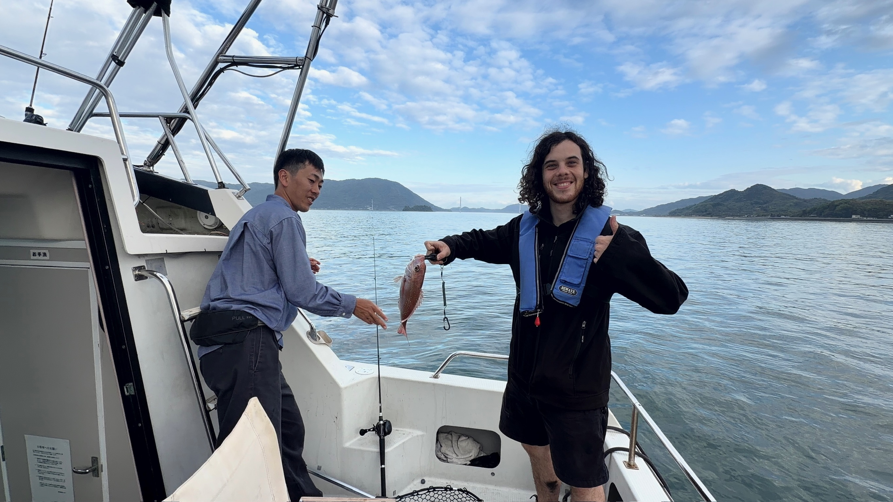
In the evening of the second day we realized that we have another problem. There isn't a straight ferry from Imabari (the cycle route finishing island) back to Onomichi. So we started to accept the reality that we will either have to wake up at 5:30 AM to finish the route and then catch a ferry to a closer island and cycle back, or chain a few ferris together to solve it. The best chain we got was 4 ferries, but that would still require us to wake up at 5:30 AM. After a few optimizations from Matan's girlfriend, we managed to lower it down to 3 ferris, with a short 2 km ride in the middle, and we could wake up at 8 AM to start regularly. That's what we did.
Apart from that, the final day was a breeze (apart from our legs being absolutely sore). We cycled from Omishima to Hakata Island, and from there to Oshima Island. Took a few breaks, as the route was a little uphill and then kept going to Imabari.
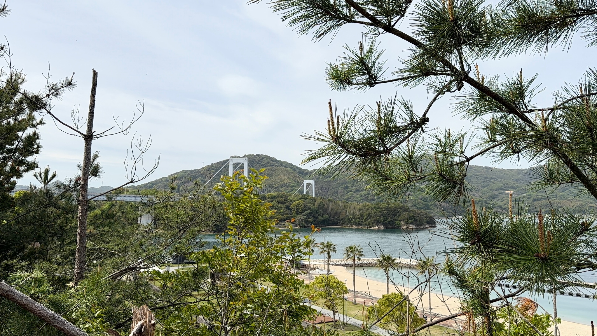
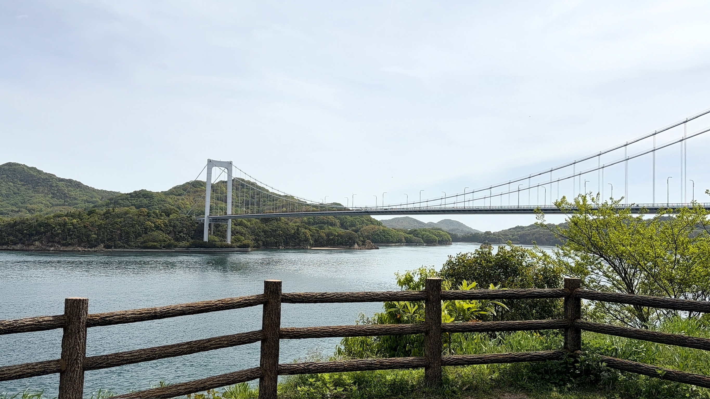
Unfortunately, we lost our way in the final 2 KM of the route. So we didn't properly finish it. But I had a lot of fun, and that's what matters. We even took a victory picture :)
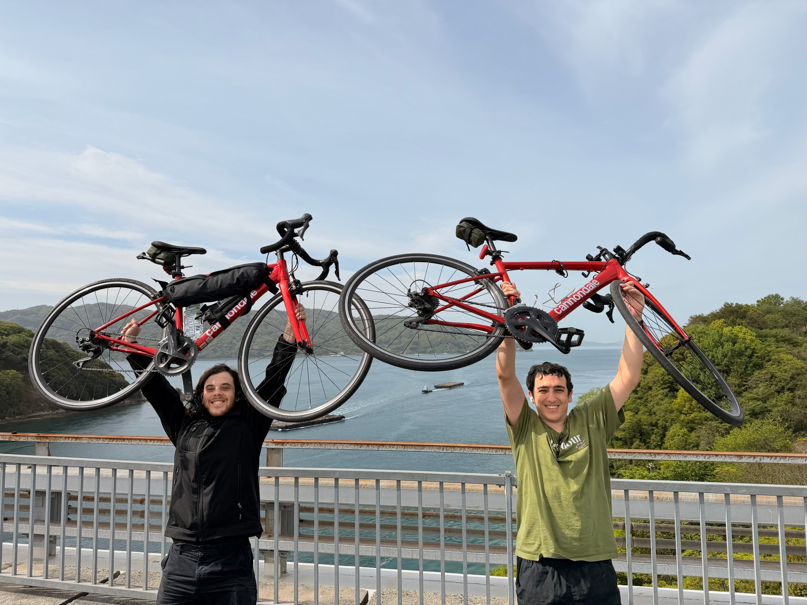
That's it! We went back to Onomichi, returned our bikes, had a goodbye dinner in Fukuyama and I took a shinkansen to Osaka. Matan stayed in Fukuyama to travel the area a bit more.
The following day I went to a hair dresser, to tidy up my hair a little, as it was getting a little long and I started looking like a lost traveler. And back to Singapore I went!
It was a wonderful trip, and I think from now on I will definitely try to have more cycling trips in the future.
P.S
During the trip I had a horrible time trying to remember the names of these islands and also, specific Japanese dishes. I would constatnly call Okonomiyaki Omurice or have a mix of them both. It took a long time looking up the names of the places for this post. So don't take it for granted!